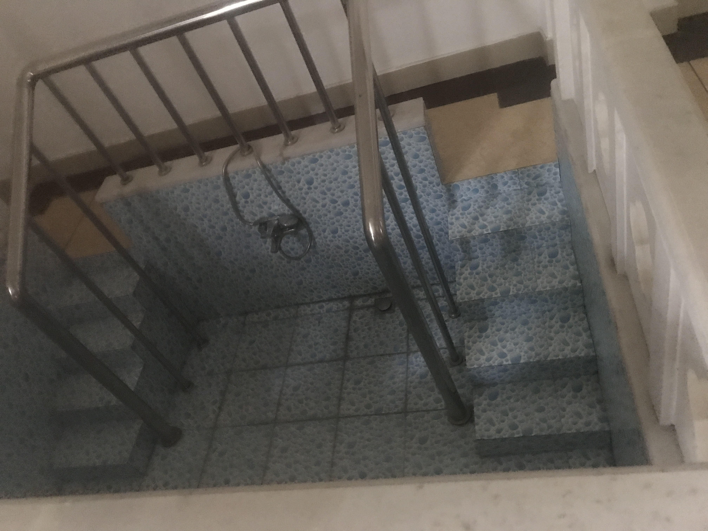

为什么天主教里面有游泳池？地址：江阴市扬子江国际礼拜堂（通江北路103-105号），
GPT的回答：在我了解的范围内，并没有关于天主教堂内部设有游泳池的信息。天主教堂作为宗教建筑，通常是用于举行宗教仪式、祷告和教育活动的场所。其结构和设计主要以服务宗教活动为主。如果你对特定的天主教堂有疑问，建议与该堂所在地的当地教区或相关机构进行咨询，以获取准确的信息。
草 为啥起的 恩做事 一些问题和？的错误 为啥叫道德经整？yuan 文物 问子 wen zhang 根据他这么多年 落地成型qiang的研究，谁看得懂原版 看过 想找道德经原版 金刚经？ 一直斑斑的解 4元多钱 不见得每天都有 书店会合